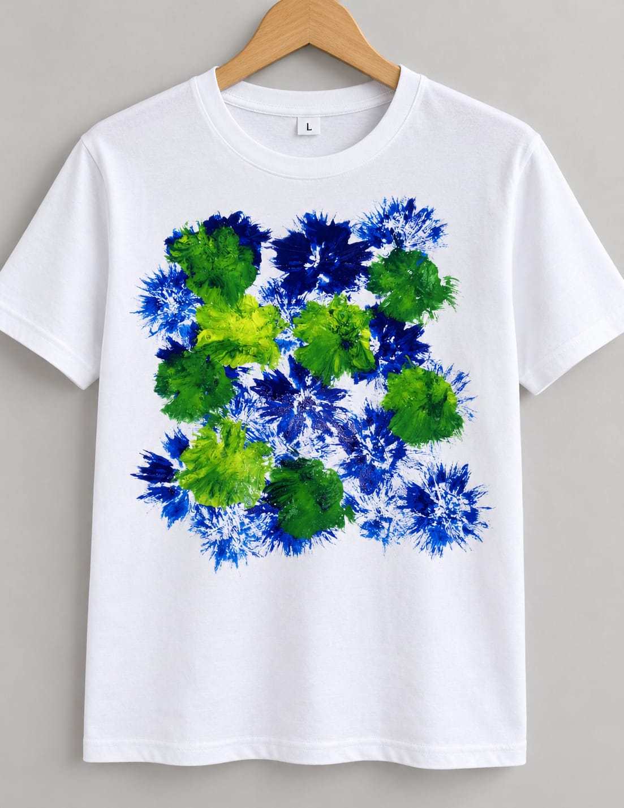

Imagine
We begin with inspiration, sketches and the excitement of a new idea.
THE FIRST SPARK ↗Welcome to our little corner of creativity — where colours bloom, ideas take shape, and every detail tells a story.

We’re Khushi & Zinat — two creative minds bringing our ideas to life, one design at a time.
This project is our way of exploring fabric, patterns, colour and imagination. From the first sketch to the finished look, we believe that thoughtful design can turn something simple into something special.
Sketches, swatches, prints and finished pieces — a peek into the ideas and experiments that make our project ours.
✳ Every photo is part of our process — from first thoughts to finished fabric.
Good design doesn’t happen all at once. It grows through curiosity, experiments and a little bit of magic.
We begin with inspiration, sketches and the excitement of a new idea.
THE FIRST SPARK ↗We explore colours, patterns and fabric details to find what feels right.
PLAY WITH COLOUR ↗We bring our favourite ideas together and make our vision real.
MADE WITH LOVE ↗THIS IS OUR LITTLE WORLD
Thank you for being part of our creative journey. Here’s to making, learning, laughing and dreaming — together.
Back to the beginning ↑